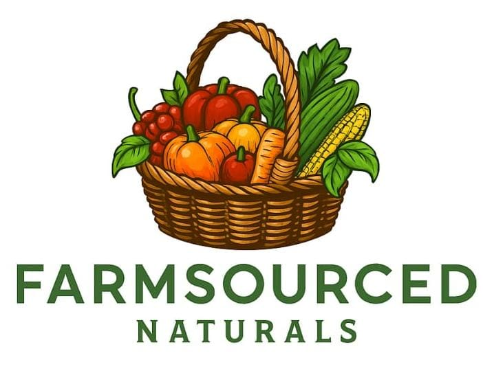

FarmSourcedNaturals is built on a passion for pure, organic, farm-grown products. We work directly with local farmers to source the freshest produce, which is dehydrated carefully to preserve natural nutrients and flavor.
Our mission is to bring naturally processed and chemical-free foods from farms to your home. We believe in sustainability, purity, and quality in every product we create.